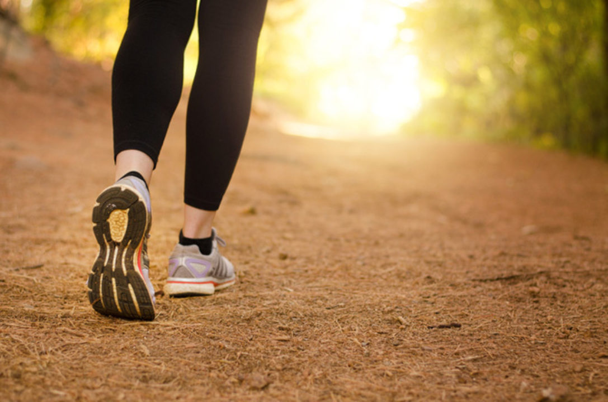
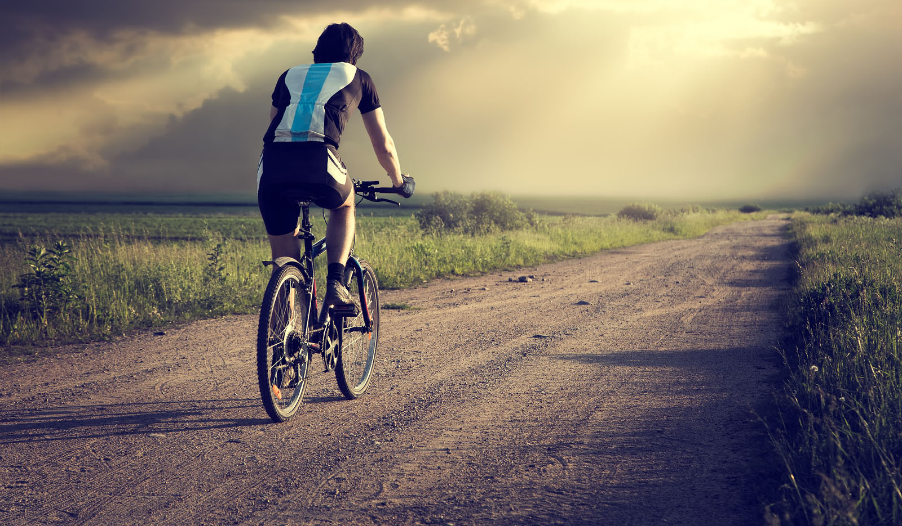
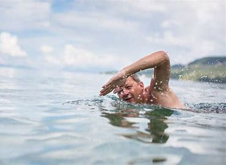
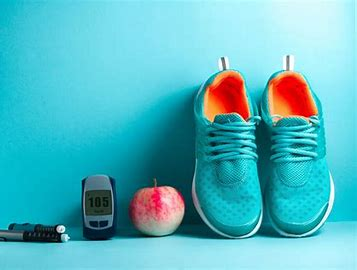
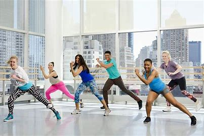
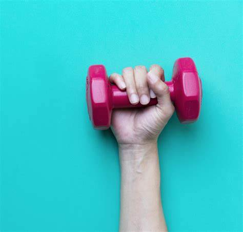
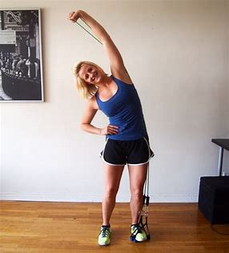
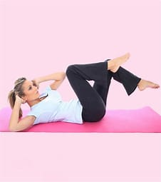
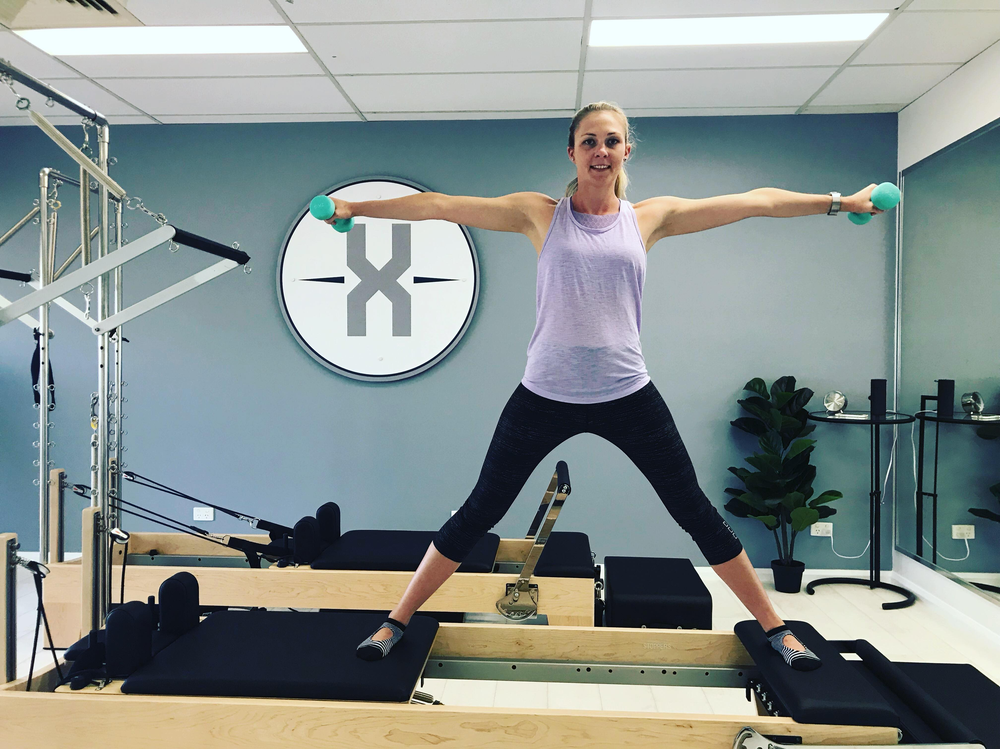

Diabetes and Yoga
An increasing number of people with diabetes mellitus are turning to yoga in an effort to keep their condition under control and improve overall quality of life. It is well known that regular practice of yoga can help reduce levels of stress, enhance mobility, lower blood pressureand improve overall wellbeing.It involves various body postures and movements (known as asanas), breathing techniques and meditation, which are all designed to promote physical comfort and mental composure.
Benefits of Yoga for people with Diabetes
Yoga is considered to be a promising, cost-effective option in the treatment and prevention of diabetes, with data from several studies suggesting that yoga and other mind-body therapies can reduce stress-related hyperglycemia and have a positive effect on blood glucose control. Controlling mental stress (stress management) is one of the keys of diabetes treatment When we’re stressed, our blood sugar levels increase and elevated blood sugar levels increase the chances of serious complications such as heart disease.
Other main benefits:
Yoga can also treat diabetes or prevent the disease from developing by:
- Rejuvenating pancreatic cells-Yoga postures that aid relaxation (asanas) stretch the pancreas, which can stimulate the production of insulin-producing beta cells.
- Exercising the muscles-Like other forms of exercise, yoga increases glucose uptake by muscular cells, which in turn, helps to lower blood sugar levels, improve circulation and reduce the risk of cardiovascular disease.
- Promoting weight loss-Exercising through yoga can reduce weight and improve weight control, both of which are essential for protecting against conditions such as type 2 diabetes, cancer and heart disease, as well as diabetes management.
- Improving your mental attitude-Regular yoga practice can help to focus the mind and create the right mental approach to dealing with diabetes.
Dietary management of diabetes with Yoga
Yoga is also known to regulate eating patterns, and its potential utility in the management of eating disorders has been advocated. It is believed that the mind-body connection that stems from yoga practice provides opportunities for self-awareness, reflection, and change.Yoga, pranayama, and sudarshan kriya were found to be beneficial in improving dietary practices and medication adherence.
Yoga practise and mindful Eating
Yoga participation has been correlated with both fruit and vegetable intake, as well as improved eating habits and mindful eating practices [Meditation and ability to heighten mindfulness may be beneficial in controlling binge-eating patterns. Mindful eating in diabetes has shown to facilitate improvements in dietary intake, modest weight loss, and glycaemic control
Various Yoga Asanas To Help Reduce Diabetes
-
Dhanurasana (Bow Pose)
This pose helps in strengthening and regulates the pancreas. Therefore, this pose is suitable for people with diabetes. Additionally, it targets strengthening the abdomen muscles, boosts digestion, prevents stomach cramps. Process:
- Lie down on your stomach and keep your feet slightly apart. Keep your arms on the sides of your body.
- Fold your knees and hold your ankle.
- Lift your chest from the ground while taking a deep breath. Simultaneously, pull your legs up and back. Feel the stretch on your arms and thighs.
- Look straight ahead with a smile on your face. Hold the pose for at least 15 seconds.
- As you exhale, slowly bring your chest down on the ground. Leave your ankle to bring your legs towards the ground.

-
Balasana (Child pose)
This pose involves hamstrings, rotator muscles, and spinal extensors. It helps in relieving stress, fatigue, and back and neck pain. It also encourages relaxation that helps in increasing the production of insulin-producing beta cells.
Process:
- Sit in the kneeling position and ensure that your knees are wide apart in the same width as your hips.
- Move a bit backward and try to touch your heels with your hips.
- Lean forward to touch the ground with your forehead.
- Stretch your arms forward and feel the pressure on your back.
- Remain in this pose for about 5 minutes. Now, relax and lift yourself back in the seated position.

Also read: Demonstrate the quick screening of blood glucose by using glucometer in lab
-
Bhujangasana (Upward facing dog pose)
Your spinal extensors, triceps brachii, and quadriceps muscles work together in this pose. As a result, it increases the strength of your muscles. It ultimately reduces your blood sugar levels.
Process:
- Lie on your stomach and keep your legs straight.
- Keep your forearms perpendicular to the floor. Take your arms on the floor adjacent to the last ribcage.
- Press your arms to lift your body.
- Do not hold your body on your feet. Instead, create pressure on your feet and firm your hip muscles.
- Look straight or slightly upward. Breathe normally and hold this position for at least 15 seconds before you sit in relax.

-
Corpse pose (Shavasana)
It is the ultimate resting pose. It allows your body to cool down and enter into the meditative stage. The corpse pose not only relaxes your body but also calms down your mind. It enables your brain to process the workout and get its benefits on your body. Practice this pose at the end of the yoga session.
Process:
- Lie down straight on your back and close your eyes
- Relax your mind and body. Take your time to feel the weightlessness around you.
- Do not think anything. Release the stress and relax completely.
- Breathe as normal without holding your breaths.
- Hold this position for 15-20 minutes.
- Now, stand up and feel your stress-free body.

-
Legs up the wall (Viparita Karani)
Legs up the wall yoga pose stimulate your internal organs like the pancreas. Therefore, this pose makes a significant impact in controlling your diabetes. Regularly practice this pose helps in controlling blood pressure and lowering your blood sugar levels. Along with this, legs up the wall pose relaxes your body by improving blood circulation and improving energy levels.
Process:
- Lie down along the side of the wall. Use a folded towel under your head for support.
- Keep your legs up the wall while making an angle of 90 degrees with the wall.
- Relax your head, neck, chin, and throat.
- Stretch your arms while keeping them beside your body.
- Stay in this pose for 5-10 minutes or more. Later, slide your legs slowly towards the ground.

-
Mountain pose (Tadasana)
It is a simple yoga pose but needs the perfect technique to transform your body and mind. It helps in improving concentration, increase the strength of your knees and promote flexibility of your spines. Mountain pose creates more space within your body and allows the internal organs to work more efficiently. Therefore, it helps improving blood circulation and promotes insulin sensitivity to control your blood sugar levels.
Process:
- Stand straight on the flat ground and keep your arms on the sides of your body.
- Keep your palm in the upward direction.
- Slowly breathe in and extend your arms up and down to the sides of your body.
- Hold this position for a while.
- Repeat this position ten times. Exhale slowly and bring down your arms back in the starting position.

-
Mandukasana (Frog Pose)
It is one of the best yoga poses for people with diabetes. It helps in stretching the pancreas to promote the release of insulin. Along with this, it also promotes better digestion health and improves the function of the other glands in your body. You should avoid this pose if you have backache, ankle injuries, hypertension, migraine, or insomnia.
Process:
- Fold your knees backward and sit down on the ground with the assist of your knees.
- Make a fist and put your hand on your stomach. Keep your fist in such a way that the joint of your fists comes at the navel.
- Place your fist firmly and press your stomach.
- Bend forward in this position and try to touch the ground with your forehead
- Hold this position for 15-20 seconds then, exhale and relax.

-
Chakarasna (Wheel Pose)
It is another effective yoga for diabetes control. In this pose, you have to bend backward and touch the ground with your palm. This asana helps in stretching your spine and relaxes it. Regular practicing of the wheel pose helps in reducing stress and calms down your mind. It strengthens the pancreas that stimulates the release of insulin for balancing your blood sugar level. Along with this, it also improves the health of your kidney and liver. These are at high risk of diabetes complications.
Process:
- Lie down on your back. Bend your knees and bring your legs close to your hips.
- Bring your palm under your shoulder such that your fingers point towards your shoulders. Keep your elbows in shoulder-width apart.
- Press your palm firmly on the ground and inhale while lifting your shoulders, elbows, and hips.
- Straighten your arms and legs so that your hips and shoulder feel the upward push.
- Hold this pose for few seconds then, bend your elbows and shoulders first to bring your head down. After that, bend your knees to lower your hips and spine to the ground.

-
Halasana (Plow pose)
People with diabetes who have a sedentary lifestyle should practice halasana. It helps to control the adverse effect of diabetes on your body. This pose involves your abdomen muscles. Therefore, it helps in reducing belly fat and promotes the secretion of insulin in your body. As a result, it controls your blood sugar levels while regularly practicing this yoga asana minimizes the risk of diabetes type-2.
Process:
- Lie down on your back on the ground. Keep your hands straight on the sides of your body, palm facing towards the ground.
- Inhale slowly and raise your legs 90 degrees.
- Exhale slowly and keep the legs straight. Gradually, move your legs from the top of the head to the back. Try touching the ground with the toes of your feet.
- You can take support of your hand to push your waist upward so that you can touch the ground with your toes.
- Now, keep your hands straight on the ground. Stay in this pose for some time and normalize your breathing while coming back to the initial position.

-
Ardha Matsyendrasana (Half Lord of the fish pose)
This asana massages the internal organs for better functioning. It is a retreat for the liver and pancreas. Ardha Matsyendrasana involves a half spinal twist that helps in improving your energy levels and promotes the release of insulin in your body. Therefore, this pose helps in controlling your diabetes and keeps your energy levels high.
Process:
- Sit on the ground while keeping your legs out in the front.
- Bend your knees and keep your feet on the ground. Then, slide your left leg under the right leg.
- Step your right foot over the left leg and make it stand on the floor.
- Now, put your right hand against the floor and behind your hips. Set your arm on the left side of your right knee. Point the right knee towards the ceiling.
- Sit in this pose for around a half minute and then relax.

-
Seated Forward Bend (Paschimottanasana)
This Therapeutic Forward Bend Yoga Has Many Benefits. It Helps To:
- Lower blood pressure.
- Remove extra fat from your body.
- Reduce headache, anxiety, and fatigue.
- Relax the mind and relieve stress and mild depression.
- Tone the abdominal and pelvic organs.

Process:
- Sit on the floor and stretch your legs out straight in front of you.
- Inhale, raise both the hands above your head and stretch up.
- Exhale while bending forward and hold the toes with respective hands.
- Your forehead must touch the knee joint in the bent position. Close your eyes. Breathe (2-3 times).
- Inhale while raising your head and release the hands.
- Exhale, lower the arms.
-
Reclining bound angle pose (Supta baddha konasana):
This is a classic restorative yoga. It helps to:
- Lower the stress levels.
- Control blood sugar and blood pressure levels.
- Calm the nervous system.
- Stimulate abdominal organs, kidneys, and heart.

Process:
- Sit with your legs extended forward.
- Fold your knees and pull your feet closer to your trunk bringing the soles of your feet together.
- Place your elbows on the floor behind you to help lean yourself on the ground.
- Stretch your arms to the side and breathe naturally (for 2 mins).
- Use your elbows to lift your body up.
- Straighten your legs and relax.
- Practice yoga under qualified professional
- Vigorous exercise and fast-paced yoga are done in hot temperature conditions. These are not recommending for patients with diabetes and heart diseases.
- Beginners to yoga should avoid hard yoga practices.
- Diabetic patients should regularly monitor their body reactions after every physical activity.
- Any sign or symptom or pain should not be overlooked if you are diabetic.
- Don’t do yoga beyond your capabilities.
- Generally, yoga requires an empty stomach, but diabetic patients should take light snacks to avoid hypoglycemia.
- Any sign of dizziness, headache, etc. should be reported to the practitioner.
Precautions of Yoga Asanas For Diabetes
Yoga requires expertise and thus should be practiced under the guidance of qualified yoga professionals. Some styles of yoga may not be suitable for everyone. General precautions to be followed are as follows:
References:
Exercises and Diabetes
Walking
You don’t need a gym membership or expensive exercise equipment to get moving. If you have a supportive pair of shoes and a safe place to walk, you can start today. In fact, you can meet your recommended minimum target for aerobic fitness by going for a brisk 30-minute walk five days a week. According to a 2014 review, walking can help people with type 2 diabetes lower their blood sugar levels and lose weight.
Cycling
Roughly half of people with type 2 diabetes have arthritis. The two conditions have several risk factors in common, including obesity. Diabetic neuropathy, a condition that occurs when the nerves become damaged, can also cause joint pain in people with type 2 diabetes. If you have lower joint pain, consider choosing low-impact exercise. Cycling, for example, can help you meet your fitness goals while minimizing strain on your joints.
Swimming
Aquatic activities provide another joint-friendly exercise option. For example, swimming, water aerobics, aqua jogging, and other aquatic activities can give your heart, lungs, and muscles a workout, while putting little stress on your joints.
Sports
If you find it hard to motivate yourself to exercise, it might help to join a recreational sports team. The opportunity to socialize with teammates and the commitment you make to them might help you find the motivation you need to show up each week.
Aerobic dance
Signing up for an aerobic dance or other fitness class might also help you meet your exercise goals. For instance, Zumba is a fitness program that combines dance and aerobic movements for a fast-paced workout.
Weight lifting
Weightlifting and other strengthening activities help build your muscle mass, which can increase the number of calories you burn each day. Strength training may also help improve your blood sugar control, reports the ADA. If you want to incorporate weightlifting into your weekly exercise routine, you can use weight machines, free weights, or even heavy household objects, such as canned goods or water bottles.
Resistance band exercises
Weights aren’t the only tool that you can use to strengthen your muscles. You can also perform a wide variety of strengthening activities with resistance bands. To learn how to incorporate them into your workouts, speak with a professional trainer, take a resistance band class, or watch a resistance band workout video. In addition to increasing your strength, exercising with resistance bands may provide modest benefits to your blood sugar control, according to a recent study published in the Canadian Journal of Diabetes.
Calisthenics
In calisthenics, you use your own body weight to strengthen your muscles. Common calisthenic exercises include pushups, pullups, squats, lunges, and abdominal crunches. Whether you choose to strengthen your muscles with weights, resistance bands, or your own body weight, try to work out every major muscle group in your body. To give your body time to recover, take a day off from muscle-strengthening activities between each session of strength training, suggests the ADA.
Pilates
Pilates is a popular fitness program that’s designed to improve core strength, coordination, and balance. According to a recent study of older women with type 2 diabetes, it may also help improve blood sugar control. Consider signing up for a Pilates class at your local gym or Pilates studio. Many instructional videos and books are also available.
